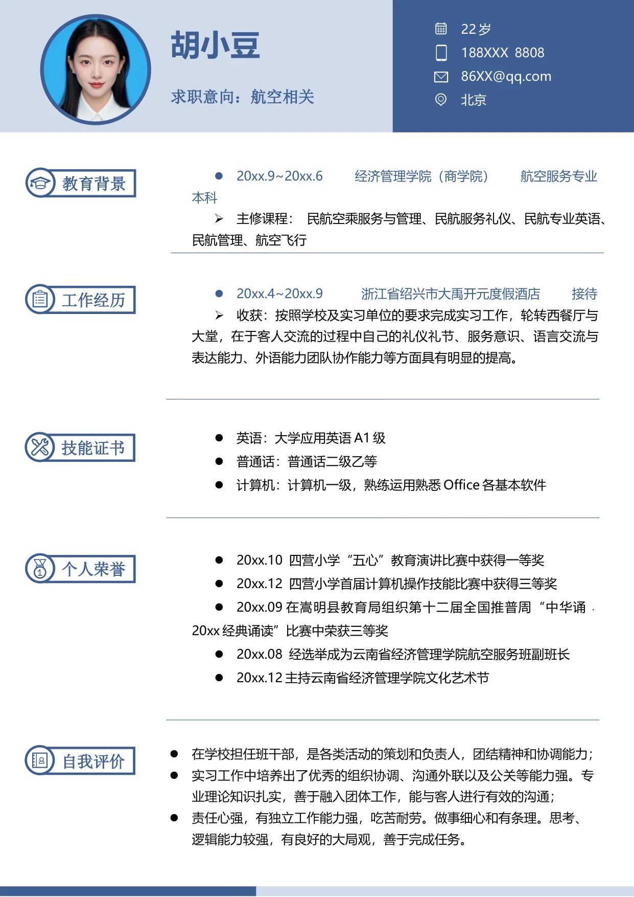

•
20xx.4~20xx.9 浙江省绍兴市大禹开元度假酒店 接待
•
收获：按照学校及实习单位的要求完成实习工作，轮转西餐厅与
大堂，在于客人交流的过程中自己的礼仪礼节、服务意识、语言交流与
表达能力、外语能力团队协作能力等方面具有明显的提高。
•
在学校担任班干部，是各类活动的策划和负责人，团结精神和协调能力；
•
实习工作中培养出了优秀的组织协调、沟通外联以及公关等能力强。专
业理论知识扎实，善于融入团体工作，能与客人进行有效的沟通；
•
责任心强，有独立工作能力强，吃苦耐劳。做事细心和有条理。思考、
逻辑能力较强，有良好的大局观，善于完成任务。
•
20xx.10 四营小学“五心”教育演讲比赛中获得一等奖
•
20xx.12 四营小学首届计算机操作技能比赛中获得三等奖
•
20xx.09 在嵩明县教育局组织第十二届全国推普周“中华诵﹒
20xx 经典诵读”比赛中荣获三等奖
•
20xx.08 经选举成为云南省经济管理学院航空服务班副班长
•
20xx.12 主持云南省经济管理学院文化艺术节
•
20xx.9~20xx.6 经济管理学院（商学院） 航空服务专业
本科
•
主修课程： 民航空乘服务与管理、民航服务礼仪、民航专业英语、
民航管理、航空飞行
•
英语：大学应用英语A1 级
•
普通话：普通话二级乙等
•
计算机：计算机一级，熟练运用熟悉Office 各基本软件
求职意向：航空相关
22 岁
188XXX 8808
86XX@qq.com
北京
胡小豆
教育背景
工作经历
技能证书
个人荣誉
自我评价